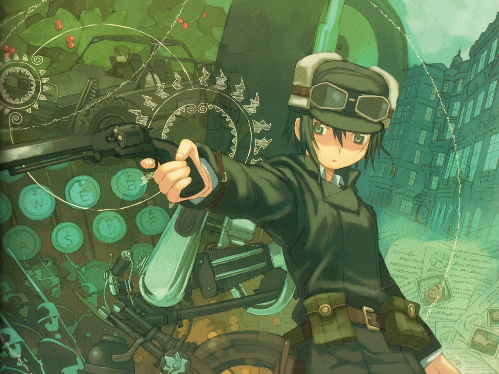

Director: Ryūtarō Nakamura
Production Studio: A.C.G.T
Genres: Adventure, Fantasy, Sci-fi
Episodes: 13
Aired: Apr 8, 2003 to Jul 8, 2003
Synopsis
Based on the (ongoing) light novel series by Keiichi Sigsawa, the philosophical Kino's Journey employs the time-honored motif of the road trip as a vehicle for self-discovery and universal truth. Deeply meditative and cooler than zero, the series follows the existential adventures of the apt marksman Kino along with a talking motorcycle (or motorrad, as it's called in the show) named Hermes as they travel the world and learn about the various countries they visit. Kino stays in each country no more than three days, otherwise she might settle in the country and wouldn't be a traveler anymore. The longer she stays in a country, however, more secrets are revealed about it.
Hermes: Don't you believe that sometimes anxiety creates nations?
Kino: Anxiety?
Hermes: Yes, anxiety. If people are afraid of the river, they will build a dike. It's the same thing.
Glass Reflection Review
My thoughts
Kino's Journey is a cynical anime. Even though the full title includes "the Beautiful World", right away in the first episode, you are shown this:
"the world is not beautiful."
This introduction pretty much describes the whole series.
We follow Kino's journey from country to country, learning about each country and their citizens. Each country essentially reflects on some aspect of the human condition, and what we learn about each country is what really makes this show juicy. For example, what would it be like in a country where technology has advanced far enough that humans don't have to work anymore? How has war evolved between two countries who were fighting each other for several hundred years? What's it like in a country where the government censors every book you read for your own good? This show presents these questions in the most interesting and cynical matter.
With each episode the question is raised: "Is the world beautiful?" I think it depends on the person answering the question.
If you decide to check out this anime, I highly recommend watching at least the first two episodes in one sitting because they really set the mood of this anime and show you what you can expect from watching more. The show is episodic with Kino visiting a new country each episode, so there's always something new to expect every time you watch one. It can be compared to Twilight Zone in terms of its blend of mystery and horror, and how each episode is independent of each other.

"The world is not beautiful; and that, in a way, lends it a sort of beauty."
The Opening
I find the opening very relaxing. I just like listening and looking at it. So here it is.